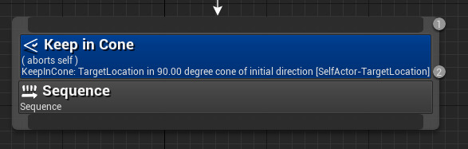

Behavior Trees
Artificial Intelligence Applied to Games
Blackboard System
Blackboard System
Imagine the following scenario:
- A group of specialists are seated in a room with a large blackboard
- They work as a team to brainstorm a solution to a problem, using the blackboard as the workplace for cooperatively developing the solution
- The session begins when the problem specifications are written onto the blackboard
- The specialists all watch the blackboard, looking for an opportunity to apply their expertise to the developing solution
- When someone writes something on the blackboard that allows another specialist to apply their expertise, the second specialist records their contribution on the blackboard, hopefully enabling other specialists to then apply their expertise
- This process of adding contributions to the blackboard continues until the problem has been solved
Blackboard System
- A blackboard system is an artificial intelligence approach based on the blackboard architectural model, where a common knowledge base, the “blackboard”, is iteratively updated by a diverse group of specialist knowledge sources (artificial agents), starting with a problem specification and ending with a solution
- Each knowledge source updates the blackboard with a partial solution when its internal constraints match the blackboard state
- In this way, the specialists work together to solve the problem
- The blackboard model was originally designed as a way to handle complex, ill-defined problems, where the solution is the sum of its parts
Blackboard in Unreal Engine
- A blackboard is a simple asset where data can be written and read for decision making purposes
- A blackboard can be used by a single AI pawn, shared by a squad, or used for any other purpose where it’s convenient to have a central place to look up relevant data
- Blackboards are commonly used with behavior trees, but you could use them separately from behavior trees for convenience or you could make a behavior tree with no need of a blackboard
Why use Blackboards?
1. To Make Efficient Event-Driven Behaviours
- Changes to the blackboard can cause events to change the execution flow of the behavior tree
- Without necessarily having to update every frame to check the value
2. To Cache Calculations
- Some data has to be calculated, which can be too complex to do repeatedly or simply expensive for performance
- Therefore, it’s frequently desirable to cache the calculated value for use throughout the behavior tree so it doesn’t have to be repeatedly recalculated
- It’s more performance efficient to calculate the values less frequently, and it’s easier and less error-prone as well
- If you recalculate the data in more than one place, you may accidentally calculate it differently (especially if you tweak the calculation after first creating it)
- Then your entire behavior may suffer from inconsistent values
3. As a scratch-pad for behaviors
- Some data you may need to use in the behavior tree might not have any other obvious home
- For example, when starting a sequence, you may want to note that you’ve started it so that other parts of the behavior tree don’t interrupt it
- But that sequence may not readily equate to a specific class or knowledge already stored somewhere
- For example, set “IsPerformingChargeAttack” to true at a subtree root node
- Under that tree, turn to face the goal, roar, charge the goal, attack!
- The Boolean value for IsPerformingChargeAttack can be used to prevent higher priority behaviors from interrupting
4. To Centralize Data
- Blackboards are good at centralizing data, removing the need for extra knowledge about where that data comes from
- Without blackboards, you often have to go through a number of steps to query information that’s stored in various different classes. For example:
- Get the AI Controller -> Ask it for the Pawn or Character
- From the Character -> Get MovementComponent -> Get the CrouchedEyeHeight
- From the Character -> Get MovementComponent -> Cast it to your game’s derived class “MyGameCharacterMovementComponent” -> Ask if the character is sliding
- Taking all of these steps whenever you want to read data is a pain
- Instead, you can post relevant data to the blackboard, and all read access can then be greatly simplified
- Centralizing data in this way is especially helpful for keeping code properly encapsulated
Creating a Blackboard
- It is by default part of the behavior tree in Unreal Engine
- Part of the basic AI system in UE
- You have access to the Blackboard in UE under the section of Artificial Intelligence
- In UE the blackboard behaves like a dictionary or a lookup table, where you can have key-value pairs
- The blackboard acts like a chalk board where you write and retrieve information
- A mechanism for sharing information between an arbitrary number of different actors
- The idea is to write values on the blackboard so they can be read by the Behaviour Tree to control behaviors
Blackboard Keys
When you create a blackboard it is empty
Since it is possible to have multiple blackboards, one can use inheritance on blackboards with parent and child
- This way, one blackboard inherits the keys from the parent blackboard
For each key you add to the blackboard, you have: Entry Name, Entry Description, Key Type and Instance Synced (for syncing this attribute across all different instances of the blackboard)
Behavior Trees
Behavior Tree Definition
- A Behavior Tree (BT) is a mathematical model of plan execution used in computer science, robotics, control systems and video games
- They describe switching between a finite set of tasks in a modular fashion
- Their strength comes from their ability to create very complex tasks, composed of smaller simple tasks, without worrying how the simple tasks are implemented
- BTs present some similarities to hierarchical state machines with the key difference that the main building block of a behavior is a task rather than a state
- Its ease of human understanding make BTs less error prone and very popular in the game developer community
Behavior Trees in Unreal Engine
From a lowly roach that hides from the light, to a Bot in a shooter that knows when to shoot, crouch, hide, seek health or ammo;
Behavior Trees are a powerful tool for creating Artificial Intelligence in Unreal Engine;
They’re a combination of two asset types: the Blackboard and the Behavior Tree.
| Asset Type | Description |
|---|---|
| Blackboard | The Blackboard is the AI’s memory. It stores key values for the Behavior Tree to use. |
| Behavior Tree | The Behavior Tree is the AI’s processor. It makes decisions, and then acts on those decisions. |
A behavior tree always starts with a special node: the Root node
The root node is where the execution begins
A behavior tree executes from the top to the bottom and from left to right
Behavior Tree Node Types
- Root
- Composite
- Decorator
- Task
- Service
Root Node
Root Node
The Root node is unique in the Behavior Tree and is the starting point for the Behavior Tree
It can only have one connection, and you cannot attach Decorators or Services to it
The Root Node has no properties of its own, but selecting it will show the Behavior Tree properties in the Details Panel, where you can set the Blackboard Asset of the Behavior Tree
Composite Nodes
Composite Nodes
- These are the nodes that define the root of a branch and the base rules for how that branch is executed
- Basic building blocks for the branches of the Behavior Tree
- They can have Decorators applied to them to modify entry into their branch or even cancel out (interrupt) behaviors mid execution
- Also, they can have Services attached to them that will only be active if the children of the Composite are being executed
Types of Composite Nodes
There are three types of Composite Nodes:
- Selector
- Sequence
- Simple Parallel
Selector Node
- A Selector Node will try to execute its child nodes from left to right, and will stop executing the child nodes when one of its children succeeds
- It is called Selector because it is selecting a valid task:
- If all the Selector’s children fail, the Selector fails
- If a Selector’s child succeeds, the Selector succeeds
- Usually, a Selector has Decorators and Services attached that allow it to determine what it is going to do
Selector Node

Sequence Node
- Sequence Nodes execute their children from left to right, and will stop executing its children when one of their children fails
- If a child fails, then the Sequence fails
- If all the Sequence’s children succeed, then the Sequence succeeds
- One of the basic Composite nodes
- Basically is the opposite of the Selector node
- The idea is to run their children in sequence until something fails
- If one task fails, it immediately aborts the sequence node and starts over from above it
Sequence Node
Simple Parallel Node
- The Simple Parallel node allows a single main task node to be executed, and at the same time also executes a full tree underneath it
- When the main task finishes, the setting in Finish Mode dictates if the node should finish immediately, aborting the secondary tree, or if it should delay (wait) for the secondary tree to finish
- Behavior Tress are meant to be event driven
- The Simple Parallel node is something that you will not use most of the time; instead, you will use the Selector node or the Sequence node
- Simple Parallel has two output nodes:
- One is purple because it is a task: it will only run a task
- The other one is generic: you can connect other Composite nodes or you can connect tasks directly
Simple Parallel - Finish Mode
It has a Finnish Mode property:
Immediate - once the main task finishes, the background tree will be aborted
Delayed - when the main task finishes, it still waits for the execution of the background tree to be over
Decorators
Decorators
- The Decorator node is basically a conditional node
- Decorators are also known as conditionals in other Behavior Tree systems
- Decorators are attached to either a Composite or a Task node, and define whether or not a branch in the tree, or even a single node, can be executed
- Basically, they act as a kind of “IF” node:
- If it is successful, it will allow the Composite node or Task to execute
- Decorators must be attached to a Composite node or to a Task
Decorator Observer Aborts
Decorators have an Observer Aborts property.
This property is how you control when and which tasks are interrupted by other behaviors.
- None - do not abort anything
- Self - Abort self, and any sub-trees running under this node
- Lower Priority - Abort any nodes to the right of this node
- Both - Abort self, any sub-trees running under it, and any nodes to the right of this node
Decorator Node Types
| Blackboard | Check Gameplay Tag Condition |
| Compare BBEntries | Composite |
| Conditional Loop | Cone Check |
| Cooldown | Does Path Exist |
| Force Success | Is At Location |
| Is BBEntry Of Class | Keep in Cone |
| Loop | Set Tag Cooldown |
| Tag Cooldown | Time Limit |
| Custom Decorators |
Blackboard Decorator
- The Blackboard node will check to see if a value is set on the given Blackboard Key.
- “Set” means that there is a value in that key: it is not equal to null
- Can only be used on keys with object type values
- • Int, float, bool and vector have default values
Blackboard decorators have a Notify Observer property:
On Result Change - reevaluate only when the condition has changed
On Value Change - reevaluate when the observed blackboard key changes: the key is still set but the value changed
Notify Observer Example
Decorator Condition: is int key >= 5
Action: key changes from 3 to 4
- On Result Change - 4 is still < 5 : Condition result does not change, no re-evaluation is triggered
- On Value Change - 3 becomes 4 : Value changes, but condition result does not, but triggers re-evaluation because value changed
Notify Observer Example Continued
Decorator Condition: is int key >= 5
Action: key changes from 4 to 6
- On Result Change - 6 is higher then 5 : Condition result changes, triggers re-evaluation
- On Value Change - 4 becomes 6 : Value changes, and condition result changes, triggers re-evaluation because value changed
Check Gameplay Tag Condition
Decorator used to check if a pair of actors have one or more shared Gameplay Tags
Uses the Gameplay Tags system, not default Tags
Compare BBEntries Decorator
The Compare Blackboard Entries nodes will compare the values of two Blackboard keys and will block or allow the execution of a node based on that result (either equal to or not equal to)
It is an exact comparison
Compare Blackboard Entries Decorators have the following additional properties:
- Operator
- Is Equal To - are the two keys equal to each other?
- Is Not Equal To - are the two keys different to each other?
- Blackboard Key A - the first key to use in comparison
- Blackboard Key B - the second key to use in comparison
Composite Decorator
The Composite Decorator node enables you to setup more advanced logic than the built in nodes but not as complex as a full Blueprint
Once you have added a Composite Decorator to a node, Double-click the Composite Decorator to bring up the Composite’s Graph
By Right-clicking in the graph area you can add Decorator Nodes as stand alone nodes, then wire them together through AND nodes, OR nodes, and NOT nodes, to create more advanced logic
In this case, it uses the term composite to mean “combination” or “combining”
By default, the composite node decorator has no settings except for the name, because the composite node has its own event graph
Conditional Loop Decorator
As long as the Key Query condition is met, this Decorator will have the node it’s attached to loop
Cone Check Decorator
The Cone Check decorator takes in 3 vector keys:
- 1º - The location to start the cone
- 2º - To define the direction the cone points towards
- 3º - To define the location to check if it is inside the cone
- You can also define the angle of the cone by using the Cone Half Angle property
For example, to test if the player is inside our cone: AI is activated when they see the player:
Cone origin - AI location
Cone direction - forward direction
Observed - player location
Cooldown Decorator
The Cooldown decorator node will lock the execution of a node or branch until the cooldown time expires
The idea is to prevent a branch from running for a certain amount of time after it as been successfully run
For example: bullets, breathing time, special powers, etc.
Does Path Exist Decorator
This decorator checks if a path can be made from the two vectors: Blackboard Key A and Blackboard Key B
Blackboard decorators have an Path Query Type property:
NavMesh Raycast 2D - really fast
Hierarchical Query - Fast
Regular Path Finding - Slow
Force Success Decorator
The Force Success decorator changes the node result to a success
The goal is to allow it to force a success of anything it is attached to
Force success is intended to be used only in Sequences because sequences are meant to be run from left to right and continue until they get a failure
While Selectors run from left to right and stop when they get a success
To force a success of an optional branch
Or to force a success on something we have not set up completely but we still want it to do something
Is At Location Decorator
The Is At Location Decorator node checks if the AI-controlled Pawn is at the given location.
Is BBEntry Of Class Decorator
The Is BBEntry Of Class Decorator node is used to determine if the designated Blackboard Key value is of a specified Class.
“Is this a blackboard value of a given class?”
This way, you can have the same BT for different types of enemies and assign a branch to a specific type of enemy or AI player
Keep in Cone Decorator
Unlike the Cone Check decorator, the Keep in Cone decorator automatically checks forward, based on what you are observing when it starts
This decorator allows the execution of a branch based on if some actor or location is inside the cone of sight
Cone origin - the location where the cone should start (the tip of the cone)
Observed - the location or actor to keep in the cone

Loop Decorator
Loops the node or branch a number of times, or infinitely
If you have an infinite loop, make sure you have something like a blackboard decorator or something above it, so that you can break the entire sequence
Usually used to loop common tasks


Set Tag Cooldown Decorator
The Set Tag Cooldown node enables you to set a cooldown duration for a Gameplay Tag.
Similar to the cooldown decorator, but this one uses a gameplay tag for the cooldown
Tag Cooldown Decorator
A Decorator node that bases its condition on whether a cooldown timer from a Gameplay Tag has expired.
Time Limit Decorator
The Time Limit decorator will give a branch or node a set amount of time to finish before stopping it and failing out
The timer is reset every time the node gains focus
The Observer Aborts property is set to self and only allows self
Mostly used below Sequences
Custom Decorators
You can also create your own Decorators
Allows you to create the decorator logic from scratch
Behaves like a normal blueprint but with added functionalities specific to Behavior Trees
Task
Task Node
- The task nodes are the meant to be on the end (bottom) of our branches
- Tasks are nodes that “do” things, like move an AI, or adjust Blackboard values
- They can have Decorators attached to them
- You can create your own tasks or use the prebuilt ones
Task Nodes
| Finish With Result | Make Noise |
| Move Directly Toward | Move To |
| Play Animation | Play Sound |
| Push Pawn Action | Rotate To Face BB Entry |
| Run Behaviour | Run Behaviour Dynamic |
| Run EQS Query | Set Tag Cooldown |
| Wait | Wait Blackboard Time |
| Custom Tasks |
Finish with Result Task
The Finish With Result Task node can be used to instantly finish with a given result
This node can be used to force a branch to exit or continue based on the defined result.
Possible Results: Succeeded: Finishes with success. Failed: Finishes with failure. Aborted: Finishes and aborts. In Progress: Finishes as in-progress.
Make Noise Task
If the controlled pawn has the PawnNoiseEmitter Component, the Make Noise task will cause the Pawn to “produce a noise” (send a message) that other Pawns with the PawnSensing Component can hear (receive the message)
It is just a way to alert the AIPerception component that a noise was made
If you want to hear the noise, you need to have an AIPerception component
Move Directly Toward Task
Moves directly to the target ignoring obstacles
It might get stuck on some obstacles
Moves in straight line
Move To Task
The Move To node will cause a Pawn with a Character Movement component to move using the NavMesh to the Vector Blackboard key
Move to location: moves to the current location of an actor
Move to actor: continues updating the target location as it moves
Acceptable radius: how close does the pawn have to be to the target for the Move To task to succeed
Play Animation Task
It takes an animation to play:
- Animation composite
- Animation montage
- Blend Spaces
- Anim Offsets
If the Looping property is set, it will continue looping the animation until there is an abort: use this with Decorators
Nonblocking: immediately fires success when the animation starts
It is a simple basic node just intended to fire off an animation
Play Sound Task
The Play Sound node will play the sound given in the Sound to Play property
If there is no sound assigned, it will fail
Rotate To Face BBEntry Task
The Blackboard Key can an actor or a location
Rotates the Pawn to face an actor or location
Precision: in degrees
Run Behavior Task
The Run Behavior node enables you to run another Behavior Tree
Enables collapsing trees inside a Run Behavior node
It succeeds or fails, based on the BT inside of the node
Subtree asset cannot be changed at runtime
Run Behavior Dynamic Task
Same as the Run Behavior task
However, allows to change subtree asset at runtime
Run EQS Query
Runs the specified Environment Query System (EQS) asset when the Task node is executed.
An EQS is a tool to gather information about the environment
Set Tag Cooldown
Sets a Cooldown Tag value and is used with Cooldown Tag Decorators to prevent Behavior Tree execution.
The task sets the cooldown, the decorators checks it
Wait/Wait Blackboard Time Task
Wait simple has a wait time and delays its execution for that time, returning success when it is done
The Behavior Tree will wait on this node until the wait time is up
They abort if you have a decorator set to abort
The main purpose of the wait tasks is to delay the execution further down the chain
Custom Tasks
When creating a new task, you will have an empty event graph belonging to that task
You can (and should) create your own tasks with your own logic
Use tasks to define and create AI behaviors
There are 6 overridable functions that must be used
A task requires a finish node to return it succeeded or failed
Services
Service Nodes
- Services attach to Composite nodes, and will execute at their defined frequency as long as their branch is being executed
- These are often used to make checks and to update the Blackboard
- These take the place of traditional Parallel nodes in other Behavior Tree systems
- Services are perfect in scenarios where you want to check or do something every X seconds
Default Focus Service
AI Agents can have a focus target, this target commonly used to represent what the agent is looking at
This decorator creates a shortcut to accessing an Actor in your Blueprints and Code by setting the focus of the AI Controller.
By setting the focus of the AI Controller to an Actor, you can directly access it from the AI Controller instead of accessing a Blackboard key.
Run EQS Service
The Run EQS Service node can be used to regularly execute an Environmental Query System (EQS)
Runs the EQS at a defined interval and can update BB keys
Carefull: EQS are expensive to execute
Custom Services
You can also create your own services
Use these to check or perform your own logic on a set interval
Sources
Unreal Engine Documentation:
AIAG - Behavior Trees - Games and Multimedia